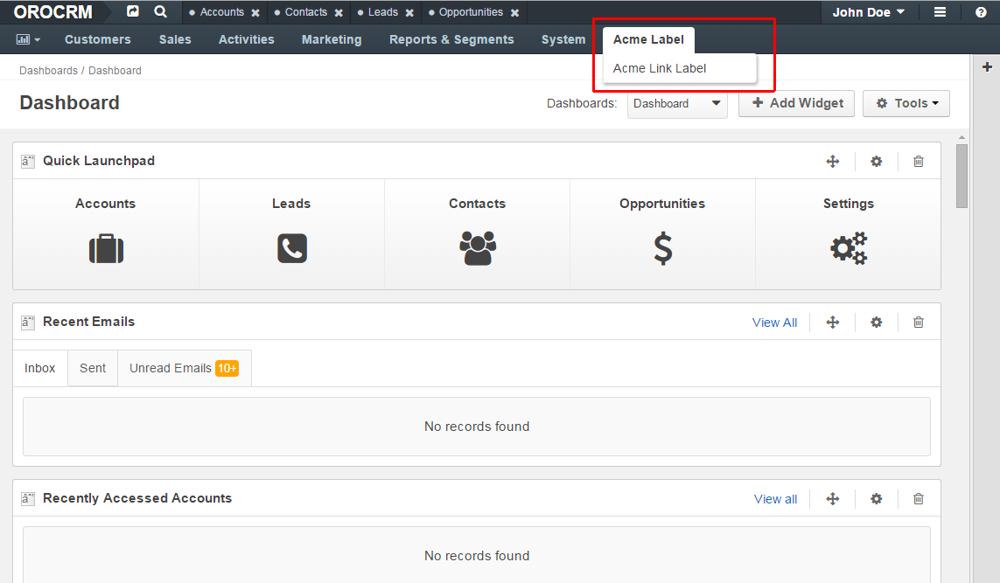
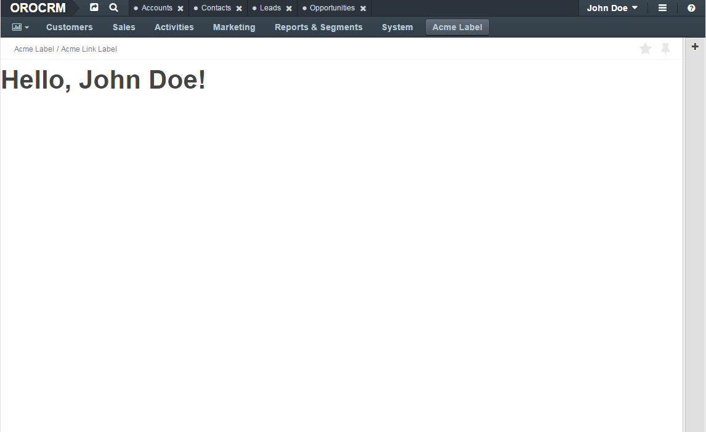
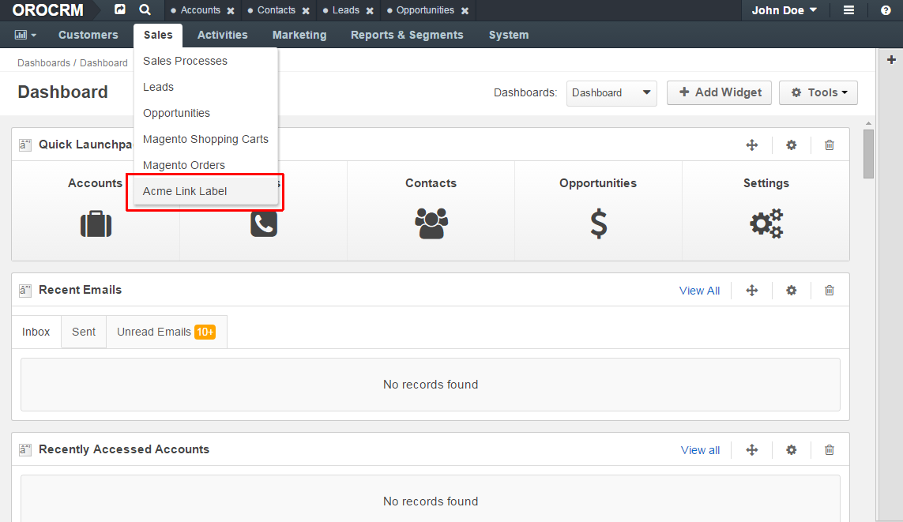

How to Create and Customize Application Menu¶
Used application: OroCRM 1.7
In OroPlatform you can create your fully personalized menu or use a simple technique to add or override a section in the default menu. This tutorial describes how to override a section in the default menu.
Let’s assume that you already have a bundle with the namespace Acme\Bundle\NewBundle in the /src directory
with annotation configuration format generated or created manually.
Create your route with annotation¶
First, you have to go to your default controller, create your action and specify the @Route and @Template annotations:
1 2 3 4 5 6 7 8 9 10 11 12 13 14 15 16 17 18 | // src/Acme/Bundle/NewBundle/Controller/DefaultController.php
namespace Acme\Bundle\NewBundle\Controller;
use Symfony\Bundle\FrameworkBundle\Controller\Controller;
use Sensio\Bundle\FrameworkExtraBundle\Configuration\Route;
use Sensio\Bundle\FrameworkExtraBundle\Configuration\Template;
class DefaultController extends Controller
{
/**
* @Route("/hello", name="acme_link")
* @Template()
*/
public function indexAction()
{
return array('name' => "John Doe");
}
}
|
See also
You can read more about both the @Route and the @Template annotation in the SensioFrameworkExtraBundle documentation.
Next, you should create a template for your action with the following content:
1 2 3 4 5 | {# src/Acme/Bundle/NewBundle/Resources/views/Default/index.html.twig #}
{% extends "OroUIBundle:Default:index.html.twig" %}
{% block content %}
<h1>Hello, {{ name }}!</h1>
{% endblock content %}
|
And finally, you should register your bundle routes. To do that you have to create a routing.yml file
with the following content:
1 2 3 4 5 | # src/Acme/Bundle/NewBundle/Resources/config/oro/routing.yml
acme_new_bundle:
resource: "@AcmeNewBundle/Controller"
type: annotation
prefix: /acme
|
Create navigation configuration¶
Now we need to create a navigation.yml file with the following content:
1 2 3 4 5 6 7 8 9 10 11 12 13 14 15 16 17 18 19 20 21 | # src/Acme/Bundle/NewBundle/Resources/config/oro/navigation.yml
navigation:
menu_config:
items:
acme_tab:
label: Acme label
uri: '#'
extras:
position: 300
acme_tab_link:
label: Acme link label
route: acme_link
tree:
application_menu:
children:
acme_tab:
children:
acme_tab_link: ~
titles:
acme_link: My link page title
|
Then you have to reload navigation data and clear cache:
1 2 3 4 5 6 | user@host:/var/www/vhosts/platform-application$ php app/console oro:navigation:init
Load "Title Templates" from annotations and config files to db
Completed
user@host:/var/www/vhosts/platform-application$ php app/console cache:clear
Clearing the cache for the dev environment with debug true
|
Note
You can use php app/console cache:clear command with parameters --env=prod or --env=dev.
Here you can see your new menu items in the default OroPlatform menu:
And here is the page you’ll see after a click on the menu item:
Override existing section¶
To override some section in the main menu you have to create the navigation.yml file with the following content
(it will add an “Acme link label” link to the sales section):
1 2 3 4 5 6 7 8 9 10 11 12 13 14 15 16 | # src/Acme/Bundle/NewBundle/Resources/config/oro/navigation.yml
menu_config:
items:
acme_tab_link:
label: Acme link label
route: acme_link
tree:
application_menu:
children:
sales_tab:
merge_strategy: append
children:
acme_tab_link: ~
titles:
acme_link: My link page title
|
And reload navigation data and clear cache:
1 2 3 4 5 6 | user@host:/var/www/vhosts/platform-application$ php app/console oro:navigation:init
Load "Title Templates" from annotations and config files to db
Completed
user@host:/var/www/vhosts/platform-application$ php app/console cache:clear
Clearing the cache for the dev environment with debug true
|
Here you can see the new menu item “Acme link label” in the Sales section:
